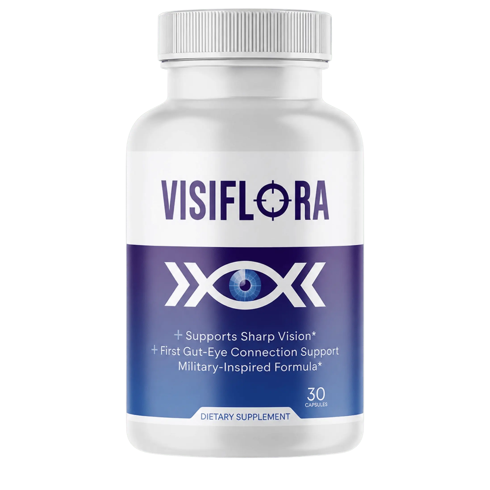
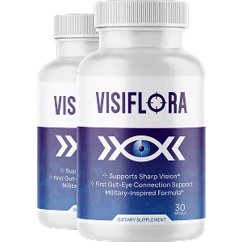
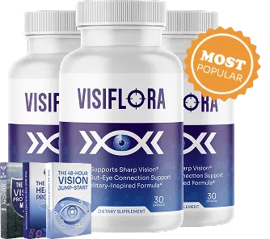
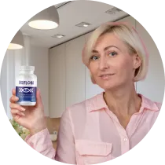

Made In USA
Formulated under strict standards
Natural Ingredients
Every ingredient named
GMP Certified
Good Manufacturing Practice
FDA-Registered Facility
Manufactured in a registered facility
VisiFlora is a 100% natural, plant-based dietary supplement created to support eye health, visual clarity, retinal function, and the everyday eye fatigue that comes from long hours in front of screens. Its formula leans on botanical antioxidants and plant-derived nutrients that nourish the eyes from the inside, helping you stay comfortable and focused through screen-heavy workdays, evening reading, and driving after dark. VisiFlora is designed as a simple daily habit — a natural alternative for adults who want to be proactive about their vision rather than waiting for strain to build up.
Secure checkout on the official store · 60-day money-back guarantee

Formulated under strict standards
Every ingredient named
Good Manufacturing Practice
Manufactured in a registered facility
Specific, everyday concerns worth naming directly.
By late afternoon your eyes ache and feel heavy, and you catch yourself rubbing them between meetings.
Your eyes feel scratchy and sandy even when you're not tired, especially after hours in front of a monitor.
Text seems to drift in and out of focus and you keep leaning closer to the screen to read it clearly.
VisiFlora is a Eye Health Supplement formulated with 11 named ingredients.
| Product | VisiFlora |
|---|---|
| Category | Eye Health Supplement |
| Ingredients | 11 named ingredients |
| Daily Serving | 2 capsules |
| Guarantee | 60 days |
| Price Range | $49–$79 per bottle |
VisiFlora works by feeding the retina the carotenoids and antioxidant nutrients it naturally concentrates, gradually strengthening the eye's own defenses against light and oxidative stress.
Lutein and zeaxanthin are absorbed into the retina over weeks of consistent use, gradually thickening the eye's natural blue-light filter.
Astaxanthin, vitamins C and E and alpha lipoic acid form a recycling antioxidant network that mops up the free radicals generated by screen light and normal metabolism.
Zinc and vitamin A support the transport and use of light-detecting pigments, while bilberry and grape seed extracts help keep the tiny vessels around the eye flexible.
Saffron extract is included for its support of retinal cell resilience, helping the eyes cope better with sustained focusing tasks.
Every benefit below is supportive, not a promised medical outcome.
Plant carotenoids like lutein and zeaxanthin build up in the macula, helping you read text and recognize detail with less blur and haze.
Antioxidant botanicals help counter the oxidative load that builds up during long hours of monitor, phone and TV exposure.
Saffron and astaxanthin are included specifically to support the health of the light-sensing cells at the back of the eye.
Macular pigments act like an internal filter, absorbing high-energy blue wavelengths before they reach sensitive retinal tissue.
Vitamin A and zinc work together on the photopigments the eyes rely on when light levels drop, such as driving after dusk.
Bilberry and grape seed extracts support the micro-vessels that deliver oxygen and nutrients to hard-working eye muscles.
A network of vitamins C, E and alpha lipoic acid helps neutralize free radicals in the lens and surrounding tissues.
A daily plant-based regimen aimed at reducing that dry, gritty, tired feeling that shows up after focused work.
Each ingredient is listed individually so you can see exactly what is inside.
A carotenoid found naturally in leafy greens and in the macula of the eye, where it helps filter harsh blue light and protect retinal cells from oxidative stress.
Lutein's carotenoid partner, concentrated in the center of the retina, working alongside lutein to defend the macula and support sharp central vision over time.
A dark-berry botanical long used in European herbal traditions, rich in anthocyanins that support healthy microcirculation in the tiny vessels feeding the eyes.
A marine-derived carotenoid with strong free-radical-scavenging activity, included to help shield delicate eye tissues from everyday oxidative strain.
A prized botanical rich in crocin and safranal, studied for its role in supporting retinal function and helping the eyes handle visual stress.
A plant-sourced precursor to vitamin A, essential for the photopigments in the retina and for keeping the surface of the eye healthy and moist.
Supports the collagen structure of the eye and helps regenerate other antioxidants in the formula, protecting lens proteins from oxidative damage.
A trace mineral that helps carry vitamin A from the liver to the retina, where it is needed to produce the pigments responsible for light detection.
A fat-soluble antioxidant that works in the lipid-rich membranes of eye cells, helping neutralize free radicals before they can cause structural stress.
Concentrated oligomeric proanthocyanidins that support the strength and flexibility of the small blood vessels serving the eyes and surrounding tissue.
A versatile antioxidant that regenerates vitamins C and E, keeping the formula's antioxidant network active for longer inside the body.
One-time payment · No subscription · No hidden charges



Note: Because carotenoids take time to accumulate in the retina, the 3 or 6 bottle bundles make more sense than a short trial — the 6 bottle option brings the per-bottle price down to $49.
The key facts about VisiFlora, straight from the label.
Each bottle contains 60 capsules.
Individual experiences shared with the brand. Results vary, and nothing here is a guarantee of outcome.

Three weeks in and my eyes don't feel that gritty, tired burn by the end of a workday anymore.

I drive home after dark a lot and the headlights bother me less since I started taking these capsules.

Easy to swallow and no weird aftertaste — I just take two with breakfast and get on with my day.
Every VisiFlora order is covered by a money-back guarantee, so if several weeks of daily use doesn't earn a place in your routine, you can contact support for a refund rather than being stuck with unopened bottles.
Order Risk-FreeQuick answers on serving, safety, shipping and the guarantee.
VisiFlora is a plant-based dietary supplement in capsule form, formulated to support eye health, visual clarity, retinal function and the eye fatigue that comes with heavy screen use.
The formula centers on the macular carotenoids lutein and zeaxanthin, plus bilberry extract, astaxanthin, saffron extract, grape seed extract, alpha lipoic acid, vitamin A (as beta-carotene), vitamin C, vitamin E and zinc.
Take 2 capsules daily with a meal and a full glass of water. Taking it with food helps your body absorb the fat-soluble carotenoids more efficiently.
Carotenoids like lutein and zeaxanthin build up in the retina gradually, so most people should plan on several weeks of consistent daily use before judging results. Screen-fatigue comfort is often the first thing users mention.
It is made from natural, plant-based ingredients and is generally well tolerated. Some people may notice mild digestive upset when starting; if you take prescription medication, have a medical condition, or are pregnant or nursing, check with your doctor first.
Anyone under 18, women who are pregnant or breastfeeding, and people taking blood thinners or other prescription medications should speak with a healthcare professional before using it. If you have a diagnosed eye condition, continue your regular ophthalmology care.
VisiFlora is sold in three bundles: 2 bottles at $79 per bottle ($158 total), 3 bottles at $69 per bottle ($207 total), and 6 bottles at $49 per bottle ($294 total). Larger bundles lower the per-bottle price and typically include free shipping.
Yes — orders are backed by a money-back guarantee, so you can try VisiFlora for a reasonable period and request a refund through customer support if it is not the right fit for you.
No. VisiFlora is a dietary supplement, not a drug, and dietary supplements are not evaluated or approved by the FDA. It is manufactured in a facility that follows good manufacturing practice standards.
Generally yes, but check the labels for overlapping nutrients like zinc, vitamin A, vitamin C and vitamin E so you do not exceed the recommended daily amounts. When in doubt, ask your doctor or pharmacist.
Give your eyes the plant-based support they've been missing — start your VisiFlora routine today.